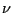

Next: Making Observations: The Ergodic Up: Statistical Mechanics: A Brief Previous: Statistical Mechanics: A Brief
A microstate is a full specification of all degrees of freedom of a system. In quantum mechanics, degrees of freedom are quantum numbers. The index  in Eq. 1 runs over all unique combinations of quantum number values. Equilibrium (eigen)solutions of the Schrödinger equation define the energy of any state :
The Ising spin lattice is a simple statistical mechanical model with discrete energy levels which we can now introduce to gain some understanding of what it means to say is “large.” Imagine a linear array of  spins, each pointing either “up” or “down.”
spins, each pointing either “up” or “down.”
Let us suppose that the Hamiltonian of this system is given by
Although quantum mechanics tells us that atomic systems have discrete energy levels, when systems contain very large numbers of atoms, these energy levels become so closely spaced relative to their span that they may effectively be considered a continuum. We can thus pass into a classical (as opposed to quantum mechanical) representation, where the microstate for a system of  particles is specified by a point in a 6
particles is specified by a point in a 6 -dimensional phase space:
-dimensional phase space:
| (5) |
| (6) | ||
| (7) |
The microcanonical ensemble represents a hyperdimensional surface in the phase space dimensioned by  particles with positions limited by the extent of
particles with positions limited by the extent of  . The factorial in Eq. 6, , takes into account that the particles are indistinguishable; that is, all orderings of particle indices 1, 2, N, are treated identically.
. The factorial in Eq. 6, , takes into account that the particles are indistinguishable; that is, all orderings of particle indices 1, 2, N, are treated identically.  is Planck's constant; note that it has units of lengthmomentum. Think of it as a quantum-mechanically-required “mesh discretization” for continuous space (it arises due to the Heisenberg uncertainty relation). It also nondimensionalizes the partition function. We will encounter it again in the next section, but we will also see why these “prefactors” are not essential ingredients of most molecular simulations.
is Planck's constant; note that it has units of lengthmomentum. Think of it as a quantum-mechanically-required “mesh discretization” for continuous space (it arises due to the Heisenberg uncertainty relation). It also nondimensionalizes the partition function. We will encounter it again in the next section, but we will also see why these “prefactors” are not essential ingredients of most molecular simulations.
You may wonder why there seem to be two viewpoints of statistical mechanics, quantum and classical. First, there really aren't two viewpoints: the classical picture is an approximation of the more general quantum mechanical picture. But statistical mechanics as a discipline was first formalized by Gibbs and Boltzmann before quantum mechanics was widely accepted, so it dealt necessarily with systems of classical particles obeying Newtonian equations of motion; that is, on classical mechanics. There appears to be a general consensus that it is easier to introduce statistical mechanical concepts using the “sum-over-states” notation of quantum statistical mechanics, rather than the apparently more cumbersome (and anyway approximate) “integral-over-phase-space” notation of classical statistical mechanics.
cfa22@drexel.edu